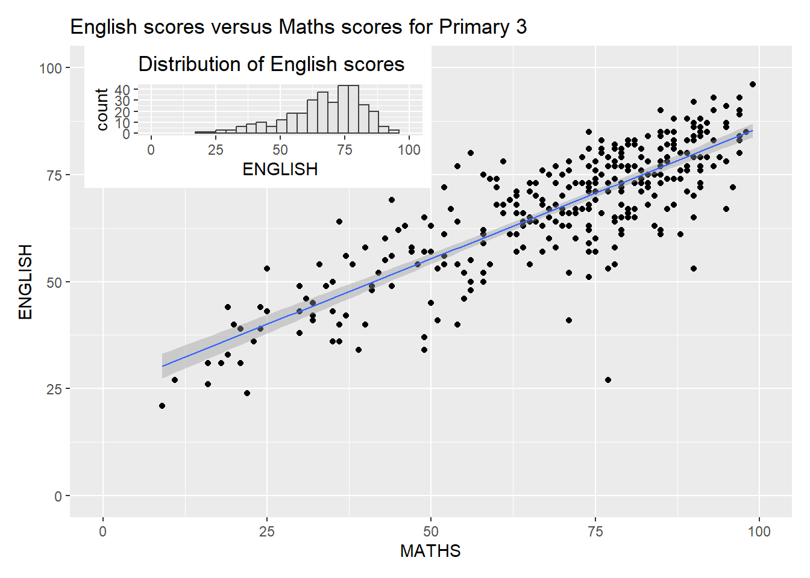

code block
pacman::p_load(ggrepel, patchwork,
ggthemes, hrbrthemes,
tidyverse, kableExtra) Lesson 2: Designing Graphs to Enlighten || Beyond ggplot2 Fundamentals
(ref:ah-ggplot) Illustration by @allison_horst. Taken from Ryan Peek’s and Rich Pauloo’s 5. Data visualization with ggplot2
{height=80%}
| Work done | Hands-on Exercise 2 |
| Hours taken | ⏱️⏱️⏱️⏱️ (one under-the-weather kid) |
| Questions | üôãü誂Äç‚ôÄÔ∏èüôãü誂Äç‚ôÄÔ∏è |
| How do I feel? | ü´° |
| What do I think? | This week’s Hands-on Exercise seemed much manageable and more time can be dedicated to the Take-home Exercise 1. I enjoyed learning and exploring the different themes - I think I really like theme fivethirtyeight.com the best. |
The code chunk below uses p_load() of pacman package to check if tidyverse, ggrepel, ggthemes, hrbrthemes and patchwrok packages are installed in the computer. If they are, then they will be launched into R.
ggrepel: an R package provides geoms for ggplot2 to repel overlapping text labels.
ggthemes: an R package provides some extra themes, geoms, and scales for ‘ggplot2’.
hrbrthemes: an R package provides typography-centric themes and theme components for ggplot2.
patchwork: an R package for preparing composite figure created using ggplot2.
pacman::p_load(ggrepel, patchwork,
ggthemes, hrbrthemes,
tidyverse, kableExtra) This section is taken from Hands-on_Ex02 as we are using the same dataset.
The dataset, Exam_data.csv, contains the Year-end examination grades of a cohort of primary 3 students from a local school, and is uploaded as exam_data.
exam_data <- read_csv("data/Exam_data.csv", show_col_types = FALSE)head():head(exam_data,5) %>%
kbl() %>%
kable_material()| ID | CLASS | GENDER | RACE | ENGLISH | MATHS | SCIENCE |
|---|---|---|---|---|---|---|
| Student321 | 3I | Male | Malay | 21 | 9 | 15 |
| Student305 | 3I | Female | Malay | 24 | 22 | 16 |
| Student289 | 3H | Male | Chinese | 26 | 16 | 16 |
| Student227 | 3F | Male | Chinese | 27 | 77 | 31 |
| Student318 | 3I | Male | Malay | 27 | 11 | 25 |
str():str(exam_data)spc_tbl_ [322 × 7] (S3: spec_tbl_df/tbl_df/tbl/data.frame)
$ ID : chr [1:322] "Student321" "Student305" "Student289" "Student227" ...
$ CLASS : chr [1:322] "3I" "3I" "3H" "3F" ...
$ GENDER : chr [1:322] "Male" "Female" "Male" "Male" ...
$ RACE : chr [1:322] "Malay" "Malay" "Chinese" "Chinese" ...
$ ENGLISH: num [1:322] 21 24 26 27 27 31 31 31 33 34 ...
$ MATHS : num [1:322] 9 22 16 77 11 16 21 18 19 49 ...
$ SCIENCE: num [1:322] 15 16 16 31 25 16 25 27 15 37 ...
- attr(*, "spec")=
.. cols(
.. ID = col_character(),
.. CLASS = col_character(),
.. GENDER = col_character(),
.. RACE = col_character(),
.. ENGLISH = col_double(),
.. MATHS = col_double(),
.. SCIENCE = col_double()
.. )
- attr(*, "problems")=<externalptr> There are 322 rows and 7 variables. The output reveals that the variables have been assigned their correct data types.
exam_data[duplicated(exam_data),]# A tibble: 0 × 7
# ℹ 7 variables: ID <chr>, CLASS <chr>, GENDER <chr>, RACE <chr>,
# ENGLISH <dbl>, MATHS <dbl>, SCIENCE <dbl>There were no duplicated rows found in exam_data.
sum(is.na(exam_data))[1] 0There were no missing values found in exam_data.
3.1 In CLASS
unique(exam_data$CLASS)[1] "3I" "3H" "3F" "3G" "3E" "3C" "3D" "3A" "3B"3.2 In GENDER
unique(exam_data$GENDER)[1] "Male" "Female"3.3 In RACE
unique(exam_data$RACE)[1] "Malay" "Chinese" "Indian" "Others" There were no string inconsistencies found in exam_data.
4.1 In ENGLISH
summary(exam_data$ENGLISH) Min. 1st Qu. Median Mean 3rd Qu. Max.
21.00 59.00 70.00 67.18 78.00 96.00 4.2 In MATHS
summary(exam_data$MATHS) Min. 1st Qu. Median Mean 3rd Qu. Max.
9.00 58.00 74.00 69.33 85.00 99.00 4.3 In SCIENCE
summary(exam_data$SCIENCE) Min. 1st Qu. Median Mean 3rd Qu. Max.
15.00 49.25 65.00 61.16 74.75 96.00 There were no data irregularities found in exam_data.

ggplot(data=exam_data,
aes(x= MATHS,
y=ENGLISH)) +
geom_point() +
geom_smooth(method=lm,
size=0.5) +
geom_label(aes(label = ID),
hjust = .5,
vjust = -.5) +
coord_cartesian(xlim=c(0,100),
ylim=c(0,100)) +
ggtitle("English scores versus Maths scores for Primary 3")`geom_smooth()` using formula = 'y ~ x'What an ugly plot! I always have this problem and then refrain from adding such labels because it renders the plot unreadable.
Yay for ggrepel!
ggrepel is an extension of ggplot2 package which provides geoms for ggplot2 to repel overlapping text as in our examples below.
ggplot(data=exam_data,
aes(x= MATHS,
y=ENGLISH)) +
geom_point() +
geom_smooth(method=lm,
size=0.5) +
geom_label_repel(aes(label = ID),
fontface = "bold") +
coord_cartesian(xlim=c(0,100),
ylim=c(0,100)) +
ggtitle("English scores versus Maths scores for Primary 3")`geom_smooth()` using formula = 'y ~ x'Warning: ggrepel: 317 unlabeled data points (too many overlaps). Consider
increasing max.overlapsThis plot is much more readable but how does ggrepel know which student labels to retain? From the observation on the graph, some of the outliers below the line are flagged out. What is the criteria for ggrepel to select what to label?
What does this warning text mean?
Ans: The data points are too crowded together and there is no solution to place all labels so it just chooses some to unlabel (oh that explains ?Question? 1 too). Solution is to set max.overlaps=__ (or Inf if you want all the overlaps… then you don’t need ggrepel?).

ggplot(data=exam_data,
aes(x = MATHS)) +
geom_histogram(bins=20,
boundary = 100,
color="grey25",
fill="grey90") +
theme_gray() +
ggtitle("Distribution of Maths scores") ggplot(data=exam_data,
aes(x = MATHS)) +
geom_histogram(bins=20,
boundary = 100,
color="grey25",
fill="grey90") +
theme_void() +
ggtitle("Distribution of Maths scores") 
ggplot(data=exam_data,
aes(x = MATHS)) +
geom_histogram(bins=20,
boundary = 100,
color="grey25",
fill="grey90") +
ggtitle("Distribution of Maths scores") +
theme_economist()
ggplot(data=exam_data,
aes(x = MATHS)) +
geom_histogram(bins=20,
boundary = 100,
color="grey25",
fill="grey90") +
ggtitle("Distribution of Maths scores") +
theme_fivethirtyeight() hrbrthemes package provides a base theme that focuses on typographic elements, including where various labels are placed as well as the fonts that are used.

ggplot(data=exam_data,
aes(x = MATHS)) +
geom_histogram(bins=20,
boundary = 100,
color="grey25",
fill="grey90") +
ggtitle("Distribution of Maths scores") +
theme_ipsum()The second goal centers around productivity for a production workflow. In fact, this “production workflow” is the context for where the elements of hrbrthemes should be used.

ggplot(data=exam_data,
aes(x = MATHS)) +
geom_histogram(bins=20,
boundary = 100,
color="grey25",
fill="grey90") +
ggtitle("Distribution of Maths scores") +
theme_ipsum(axis_title_size = 18,
base_size = 15,
grid = "Y")axis_title_size argument is used to increase the font size of the axis title to 18,
base_size argument is used to increase the default axis label to 15, and
grid argument is used to remove the x-axis grid lines.

p1 <- ggplot(data=exam_data,
aes(x = MATHS)) +
geom_histogram(bins=20,
boundary = 100,
color="grey25",
fill="grey90") +
coord_cartesian(xlim=c(0,100)) +
ggtitle("Distribution of Maths scores")
p2 <- ggplot(data=exam_data,
aes(x = ENGLISH)) +
geom_histogram(bins=20,
boundary = 100,
color="grey25",
fill="grey90") +
coord_cartesian(xlim=c(0,100)) +
ggtitle("Distribution of English scores")`geom_smooth()` using formula = 'y ~ x'
p3 <- ggplot(data=exam_data,
aes(x= MATHS,
y=ENGLISH)) +
geom_point() +
geom_smooth(method=lm,
size=0.5) +
coord_cartesian(xlim=c(0,100),
ylim=c(0,100)) +
ggtitle("English scores versus Maths scores for Primary 3")There are several ggplot2 extension’s functions support the needs to prepare composite figure by combining several graphs such as grid.arrange() of gridExtra package and plot_grid() of cowplot package. In this section, I am going to shared with you an ggplot2 extension called patchwork which is specially designed for combining separate ggplot2 graphs into a single figure.
Patchwork package has a very simple syntax where we can create layouts super easily. Here’s the general syntax that combines:
Two-Column Layout using the Plus Sign +.
Parenthesis () to create a subplot group.
Two-Row Layout using the Division Sign /

p1 + p2The composite figure below is plotted by using:
“|” operator to stack two ggplot2 graphs, “/” operator to place the plots beside each other, “()” operator the define the sequence of the plotting.
`geom_smooth()` using formula = 'y ~ x'
(p1 / p2) | p3`geom_smooth()` using formula = 'y ~ x'In order to identify subplots in text, patchwork also provides auto-tagging capabilities (e.g. I, II, III) as shown in the figure below.
`geom_smooth()` using formula = 'y ~ x'
((p1 / p2) | p3) +
plot_annotation(tag_levels = 'I')`geom_smooth()` using formula = 'y ~ x'Beside providing functions to place plots next to each other based on the provided layout. With inset_element() of patchwork, we can place one or several plots or graphic elements freely on top or below another plot.
In order to identify subplots in text, patchwork also provides auto-tagging capabilities (e.g. I, II, III) as shown in the figure below.
`geom_smooth()` using formula = 'y ~ x'
p3 + inset_element(p2,
left = 0.02,
bottom = 0.7,
right = 0.5,
top = 1)`geom_smooth()` using formula = 'y ~ x'Figure below is created by combining patchwork and different themes of ggthemes package discussed earlier.
theme_economist()
patchwork <- (p1 / p2) | p3
patchwork & theme_economist()`geom_smooth()` using formula = 'y ~ x'
theme_fivethirtyeight()
patchwork <- (p1 / p2) | p3
patchwork & theme_fivethirtyeight()`geom_smooth()` using formula = 'y ~ x'theme_few()
patchwork <- (p1 / p2) | p3
patchwork & theme_few()`geom_smooth()` using formula = 'y ~ x'theme_wsj()
patchwork <- (p1 / p2) | p3
patchwork & theme_wsj()`geom_smooth()` using formula = 'y ~ x'